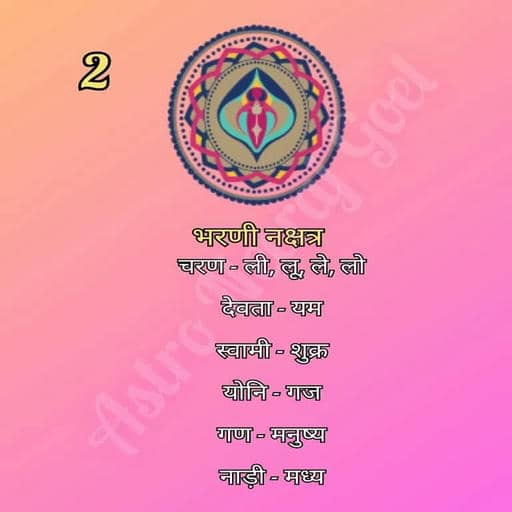

भरणी नक्षत्र (Bharani Nakshatra)
भरणी नक्षत्र आकाश मंडल का दूसरा नक्षत्र है। यह अपनी ऊर्जा, रचनात्मकता और परिवर्तन के लिए जाना जाता है।

सामान्य स्वभाव:
भरणी नक्षत्र में जन्मे जातक साहसी, स्पष्टवादी और दृढ़ संकल्प वाले होते हैं। ये जीवन के प्रति एक सकारात्मक दृष्टिकोण रखते हैं और अपनी जिम्मेदारियों को बखूबी निभाते हैं।
भरणी नक्षत्र की मुख्य विशेषताएँ
- साहसी और निडर: भरणी नक्षत्र के जातक चुनौतियों से घबराते नहीं हैं और साहसी निर्णय लेने में सक्षम होते हैं।
- रचनात्मक व्यक्तित्व: इनका झुकाव कला, संगीत और रचनात्मक कार्यों की ओर अधिक होता है।
- स्पष्टवादी: ये लोग घुमा-फिराकर बात करने के बजाय सीधी और स्पष्ट बात करना पसंद करते हैं।
- दृढ़ संकल्प: अपने लक्ष्यों के प्रति ये बहुत समर्पित होते हैं और मेहनत करने से पीछे नहीं हटते।
- जिम्मेदार स्वभाव: ये अपने प्रियजनों और समाज के प्रति अपनी जिम्मेदारियों को बखूबी समझते और निभाते हैं।